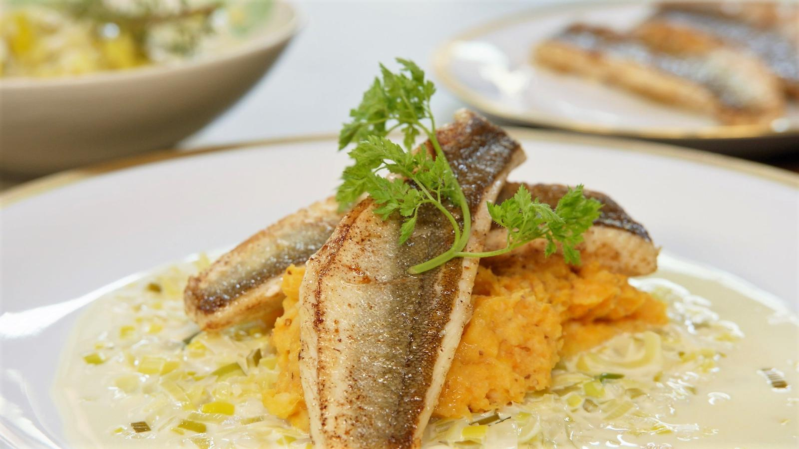

Rode poon met puree van zoete aardappel
Ingrediënten
- Chinese hot and sour soep
- chocolade wafeltjes met banaan
- Rode poon met puree van wortelen

Ingrediënten
- zoete aardappels 2
- frietaardappelen 2
- look 2 teentjes
- look 1 teentje
- prei 2 stengels
- sjalot 1
- witte wijn 2 deciliters
- tijm enkele takjes
- laurier enkele blaadjes
- boter klontjes
- rode poon 600 g
- eierdooiers 2
- graanmosterd 2 eetlepels
- melk scheutjes
- visfumet (of een blokje visbouillon) 3 deciliters
- room 2 deciliters
- kervel (voor de afwerking) enkele takjes
Bereiding
- 2 zoete aardappels2 frietaardappelen2 teentjes look Schil de zoete en de gewone aardappelen, snijd ze in grote stukken en kook ze gaar in gezouten water. Voeg er ook de volledig gepeld look aan toe.
- 2 stengels prei Snijd de prei fijn en was hem in koud water. Laat de prei even uitlekken.
- 1 sjalot1 teentje look Laat een klontje boter smelten in een pan. Voeg er fijngesneden sjalot en look aan toe, evenals de prei.
- 2 deciliters witte wijnenkele takjes tijmenkele blaadjes laurier Voeg er de witte wijn aan toe, breng het geheel aan de kook en laat de wijn bijna wegkoken. Kruid bij met tijm en laurier aan toe.
- klontjes boter600 g rode poon Zet een pan op het vuur en laat een klontje boter smelten. Snijd het vel van de rode poon lichtjes in om te voorkomen dat het gaat krullen tijdens het bakken. Bak de vis op het vel in de boter en kruid hem met peper en zout.
- 2 eierdooiers2 eetlepels graanmosterdklontjes boterscheutjes melk Giet de aardappelen af wanneer ze gaar zijn en voeg er de dooiers aan toe, gevolgd door een klontje boter, een scheutje melk en de graanmosterd. Ga met een pureestamper door de aardappelen en kruid met peper en zout.
- 3 deciliters visfumet (of een blokje visbouillon)2 deciliters room Voeg de visfumet ( of wat water met een bouillonblokje ) toe aan de prei en laat weer even inkoken. Voeg er vervolgens de room aan toe, laat weer even inkoken en kruid de saus met peper en zout.
- Draai de vis nog even kort om wanneer de kant met het vel gebakken is.
- Enkele takjes kervel (voor de afwerking) Schep wat van de preisaus op een bord en schep er een lepel puree bij. Schik de vis erbij en werk af met een takje kervel.